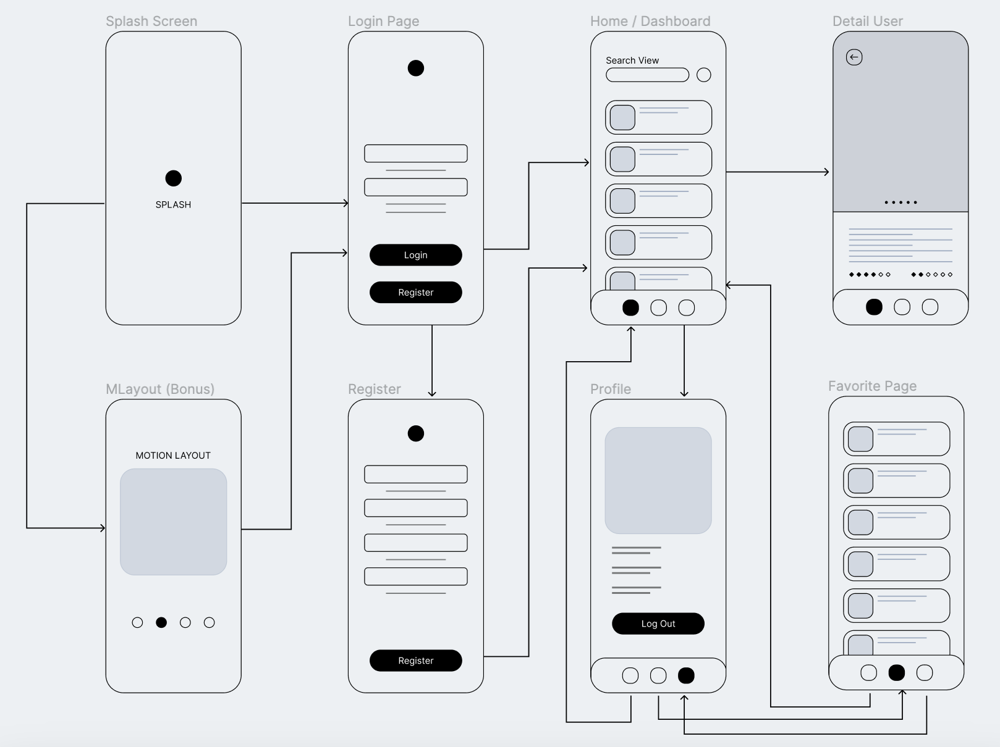

Mobile Application Project POLIJE (Kotlin)

Splash Screen *must have
Logo can be anything
Give a three-second (3000ms) delay to automatically go to the next page
Check whether you are logged in or not using DataStore Preference
Tutorial How to Create Splash Sceen
Login Page *must have
Create a Login page
User can log in
User can click the register button to move to the register page
Check whether the inputted username and password are saved on Firebase Auth
If successful in logging in, he will be directed to the dashboard page and state "logged in" will be saved in DataStore Preference
Register Page *must have
Create a Register page to register an account (can be within the same page as the Login page or create a new Page)
At least there is an app username, password, GitHub username, nim, and email
Data stored in the Firebase Auth
Home Page *must have
Create a Home Page (can be Activity or Fragment)
Display a list of users from GitHub API, you can read this Documentation , and using Retrofit
+ Bonus Points if you can use Paging for the recyclerView, you can learn from this Tutorial
Add favorite function to save user from the recyclerView to Room DB
Can be searched using searchview
Detail User Page *must have
Create a Detail User Page (can be Activity or Fragment)
Pass Argument or Intent from Home, using git username to get user data from GitHub API
Show user data from API Response
Profile Page *must have
Create a User Page (can be Activity or Fragment)
Show the user login which show us detail user GitHub (from logged-in git username) from GitHub API
Also, include a logout function to move to the Login page so that other users can log in / register
Favorite Page *must have
Create a Favorite Page (can be Activity or Fragment)
Show the list of git user that saved as favorite from home page that saved on Room DB
Add function to unfav the user from list
OnBoarding Motion Layout Page (bonus)
Create an OnBoarding Page using Motion Layout
Create minimum of three board, the content can be anything
Tutorial OnBoarding Project
Working Time
Start: Mon, 30 October 2023 15:00:00 GMT+7 Deadline: Thu, 02 November 2023 15:00:00 GMT+7
Submission Rules
The form will be closed at the deadline for submission, if submitted late it will not be corrected
Attach GitHub Link with a project name containing nim and repo is public
Assessment Components
Criteria
Weight
Required Task
25%
Function works fine
40%
Clean Code
10%
UI Design
25%
Bonus Task
20%
Praktisi Mata Kuliah Pengembangan Aplikasi Mobile POLIJE © 2023